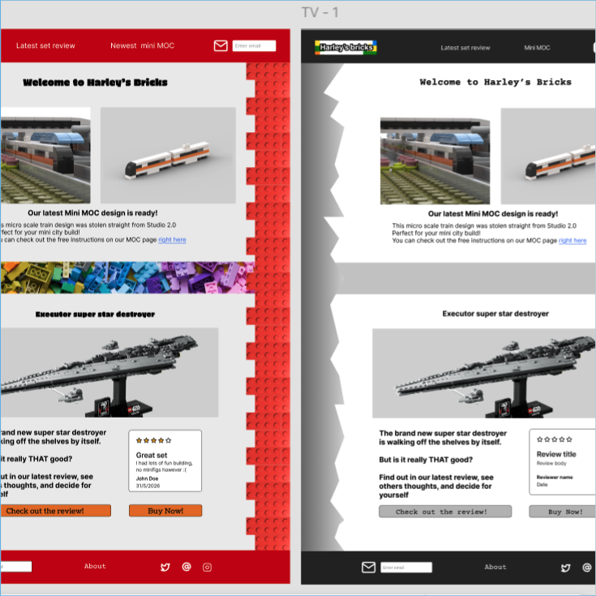
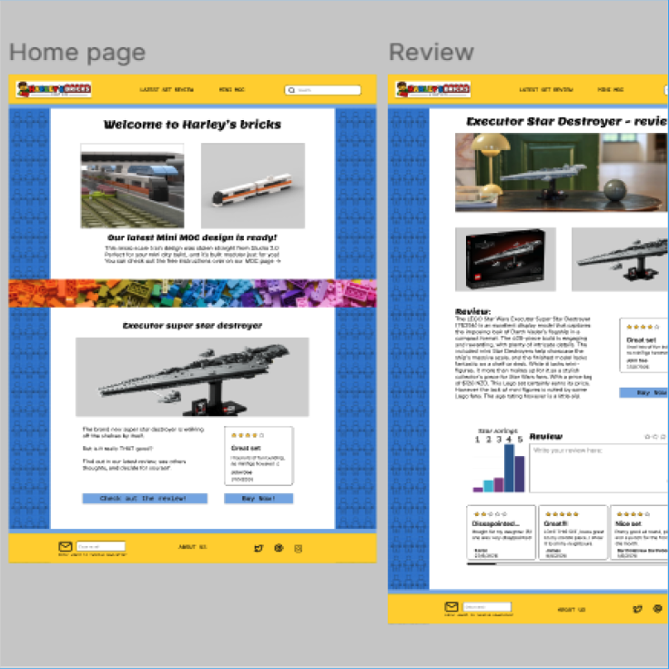

To create this website, I first mapped it out in black and white in my wireframes. This was to get a feel for the website’s layout and design before taking all the time to make it look good.
Then mock ups
a
After finding a wireframe I liked, I had to add colour and images. To see what worked best, I created three different mock ups in different styles and colours before finally deciding on the one I liked the most and proceeding to the final design.


And then the final design
a
After finding a website design and colour scheme I liked, it was finally time to clean up my design and complete the final design. You can visit the design here: